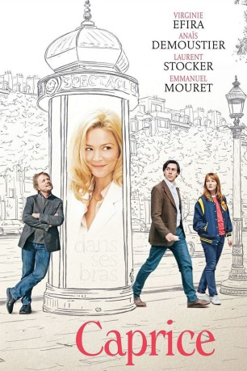
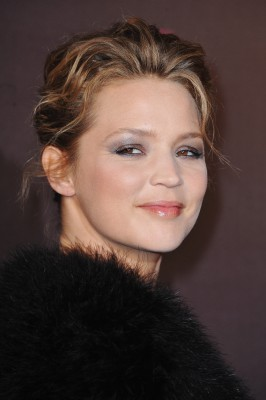

#7195 Caprice
 
 IMDB-Wertung: 5.9 / 10
IMDB-Wertung: 5.9 / 10  Metascore: 0
Metascore: 0 
Als die berühmte Schauspielerin Alicia Bardery den etwas unbedarften und tollpatschigen Grundschullehrer Clément bittet, ihrem Neffen Nachhilfe zu geben, ist dieser sofort Feuer und Flamme. Er ist ein großer Fan Alicias und hat das Theaterstück, in dem sie die Hauptrolle spielt, bereits mehrfach gesehen. Bei einer der Aufführungen trifft er auf die quirlige und aufdringliche Caprice, die ihm von nun an regelmäßig begegnet, ihn gar zu verfolgen scheint. Alicia und Clément verlieben sich ineinander und beginnen eine liebevolle Beziehung. Obschon ihre Welten nicht unterschiedlicher sein könnten, beginnen sie, ihr Leben miteinander zu teilen. Allerdings hält die Harmonie nicht lange an, da Caprice immer wieder dazwischenfunkt und Alicia sich von Clément betrogen fühlt. Dieser wiederum ist zunehmend überfordert von seinen eigenen Gefühlen, denn auch er beginnt, Caprice zu mögen.
Jahr: 2015
Dauer: 94 Minuten
FSK: 16
Land: Frankreich Studio: NOS AudiovisuaisTonspuren:
Untertitel:
Auflösung: 720p (1280x720) Größe: 2170 MB
Genre: Komödie, Liebe
Regisseur: Emmanuel Mouret
Drehbuch: Emmanuel Mouret
Soundtrack:
Darsteller:
-  Virginie Efira als Alicia Bardery
 Anaïs Demoustier als Caprice
Anaïs Demoustier als Caprice Laurent Stocker als Thomas
Laurent Stocker als Thomas- Emmanuel Mouret als Clément Dussaut
- Botum Dupuis als Christie
- Michaël Cohen als Le comédien au théâtre
- Stéphane Roquet als L'homme devant la loge
- Aurélie Houguenade als Comédienne troupe de théâtre
- Kim Cortell als La stagiaire du réalisateur
- Thomas Blanchard als Jean
- Mathilde Warnier als Virginie
- Olivier Cruveiller als Maurice
- Néo Rouleau als Jacky
- Léo Lorléac'h als Victor
- Jade Nguyen als Alexandra
- Laurent Manzoni als Le docteur
- Gabrielle Atger als Claire, l'ex-femme
- Grégoire Tachnakian als Le petit ami de l'ex-femme
- Maurice Antoni als Le concierge
- Nathalie Blanc als L'amie d'Alicia
- Alvina Garcia als L'ouvreuse
- Félix Gavaudan als L'enfant puni
- Sonia Lezinska als La barmaid
- Eric Lagesse als Le chauffeur de taxi
- Frédéric Niedermayer als Le journaliste
- Serge Noël als Le restaurateur
- Nicolas Bergeret als Comédien troupe théâtre
Datei: X:\2015(A-F)\Caprice (2015, FSK16, 1280x720).mkv seit 09.10.2017
Festplatte: HD 2015(A-Z)
 Es gibt insgesamt 143 Filme in der Gruppe '2015(A-F)'
Es gibt insgesamt 143 Filme in der Gruppe '2015(A-F)'